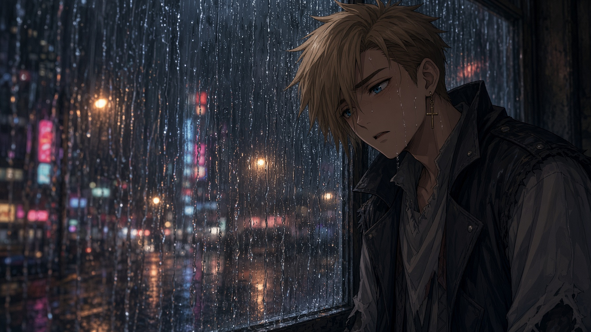

The rain didn’t stop.
Nikko woke up to it drumming on his window, and it was still drumming at noon, and by the middle of the afternoon it had stopped sounding like rain at all and started sounding like the building was being slowly sanded down. The sky over Shin-Seibu had gone the color of an old bruise, yellow-green around the edges. Down on the street, the gutters had given up. Water ran down the middle of the road in a brown sheet, carrying paper cups and palm fronds and one very lost flip-flop.
He sat on the edge of his bed with his phone in both hands.
Nothing from Wren. Nothing from Momo.
He scrolled back up through the morning. His own messages stacked up the screen in a tall blue tower, one on top of the other, with no gray ones in between. A list of snacks. A list of maybe-places. A screenshot of a map with the mountains circled in red. BUS GOES ALL THE WAY TO THE PASS!!! Three exclamation points. He winced at those now.
He typed, you guys alive? and deleted it. He typed, storm’s crazy huh, and sent it. He watched it sit there.
His thumb hovered over Wren’s name. Then over Momo’s. Then he put the phone face down on the blanket and pressed the heels of his hands into his eyes until colors bloomed behind them.
“I’m gonna go out for a bit,” he called.
“In this?” His mom’s voice came from the kitchen. It seemed like she was always in the kitchen, or the hall, or the bathroom with the fan going, one room away and warm and a little muffled, like a radio playing in somebody else’s apartment. She kept herself busy. “Honey, it’s pouring.”
“I just want to check on Wren and Momo. They’re not answering.”
“So call them.”
“I did.”
“Then call them again.” Something clinked, a spoon against the rim of a pot. “They’re probably inside like normal people. Don’t go running around in a flood because somebody didn’t text you back.”
He opened his mouth to argue and found he didn’t have anything to argue with. She was right. That was what moms were for. He picked the phone back up.
He didn’t go out. But he couldn’t stay in his room either. The walls felt too close, and the rain on the glass was making his teeth itch. He quietly popped out the door of the apartment, straightening the crooked letter in his 4C as he went. It swung back to its original position immediately. It was so weird that they built his apartment so close to the others.
He went down to the stairwell and sat on the landing between the second and third floors, where the window was big and the streetlight came in over his shoulder orange and wobbly through the water running down it.
He called Wren. It rang until it didn’t.
He called Momo. It rang until it didn’t.
He looked up pictures of tents and texted them both a list of things they’d need for the trip, mostly because it gave his thumbs something to do. Flashlight. Sunscreen. Those little orange crackers with the peanut butter in the middle. A deck of cards. Wren’s good ankle wrap. A tent, maybe, if that wasn’t too much. He added a tent emoji. He took it out. He put it back.
Nothing came back.
He leaned back and turned his head so that his cheek pressed against the cold glass. He watched the water run. Somewhere below, a car alarm went off and quit halfway through, like it had lost interest. The building hummed around him, pipes and wires and the murmur of other people’s TVs through the walls, and none of it was for him.
They’re fine, he told himself. They’re just busy. They just don’t need anything right now.
The thought slid down his throat and settled in his chest, cold and heavy, and something in him started to go quiet.
It felt like being tired. It felt like the drive home from a long day at the beach, the sun wrung out of every muscle, the seat warm and humming, his head tipping sideways no matter how hard he tried to hold it up. His eyelids got heavy. His hands got heavy. The phone in his palm got light, too light, and when he looked down at it, he could see the orange of the streetlight glowing through the edge of his thumb.
He thought that was strange. He thought he should probably be more worried about it than he was.
The stairwell went soft around the edges and his head slid slowly between his knees. The hum of the building drew away, farther and farther, until it was a sound happening to somebody else. He was so tired, but that was fine. Nobody needed him to be awake.
Then: gold.
It came through his closed eyelids like someone had thrown open a door onto noon. Warm, everywhere at once, and inside it, small and high and very far away, a voice.
Nikko!
He jerked upright so hard he cracked the back of his head on the window frame. The stairwell was dark again, orange and wet and ordinary. His phone had slid off his lap and lay face-up on the step below, its screen lit with nothing.
He sat there, breathing hard. His heart was banging like he’d sprinted the whole length of the boardwalk. He held his hand up to the streetlight and turned it over. Solid. Normal. A little shaky.
He didn’t dream much. He’d never really thought about that before, but it was true; he went to sleep and he woke up, and there usually wasn’t anything in between. So that had been weird. That had been really, really weird.
But it hadn’t felt like a dream. It had felt like Momo.
He was moving before he’d decided to. Up the stairs two at a time, jacket off the hook, board from behind the door.
“Nikko?” his mom called from the kitchen. “Honey?”
“Be right back!”
He didn’t wait to hear what she said.
Outside, the rain hit him like a flung bucket. He dropped the board, kicked off, and the wheels hissed through an inch of water. He steered with his hips and thumbed his phone with one hand, half-blind, rain beading on the screen faster than he could wipe it off.
Something’s wrong with Momo.
I think she’s at her spot.
Wren pick up.
PLEASE
The streets were empty in a way they had never been empty, not even at three in the morning. No cars. No delivery carts. No old women with their brooms. The neon was on, all of it, buzzing pink and green over the flooded sidewalks with nobody under it. In the mouth of an alley, something shifted as he rolled past, something low and dark and too wide, and when he looked back over his shoulder there was nothing there but the rain.
He skated faster.
Earlier that day, Momo stood in her kitchen in her socks and listened to her apartment being empty.
That wasn’t new. Her parents were at work. Her parents were always at work. She looked at the two mugs by the sink, the one with the chipped handle and the one with the cartoon bird on it, and noticed that there was a thin skin of dust along the rims. She noticed it, and then she chose not to.
The rain hammered the window. The fridge hummed. Her stomach was a tight, small fist, and it had been since the pizza place.
She texted Wren. are you ok?
She watched the screen until it went dark. She tapped it awake. She watched it go dark again.
Her phone buzzed and her whole body jumped, and it was Nikko. A list. Flashlight. Sunscreen. Those little orange crackers. A tent, maybe, if that wasn’t too much, with a tiny tent next to it.
Something in her chest loosened half a notch. Then it pulled tight again, tighter than before, and she didn’t know why, and she put the phone down on the counter so she wouldn’t have to know.
She didn’t want to be here. The apartment felt like a held breath. She wanted the tunnel, her tunnel, the cool dark and the hum of the city through the concrete and the fish swimming in the painted sky.
She stood in front of the kitchen island and read Nikko’s list one more time. Then she closed her eyes and asked.
Flashlight. Batteries. The little orange crackers. A blanket.
There was a warm prickle in her palms, and when she opened her eyes, a few flecks of gold were still drifting down through the kitchen light, slow as dust in a sunbeam. The flashlight sat on the island. So did the batteries, the crackers, and a folded blanket the color of a peach.
She didn’t think about it. She never thought about it. Thinking about it made her stomach roll sideways, and she had enough going on with her stomach already. She swept everything into her duffel bag and pulled her big orange jacket on over her shoulders and went.
Her door clicked shut behind her. 4C. The C hung crooked, swinging from one nail. The doors on either side of hers were too close, so close their frames almost touched, like they’d been squeezed in after the fact. She’d walked past them a thousand times. She didn’t look at them now.
The fence was where it always was. So was the hole. She ducked through, the wire catching at her hood, and went down the steps into the dark.
The tunnel was wrong.
Usually there was light down here, even in the evening, thin gray bars of it coming down through the street grates and lying across the tracks like fallen ladders. Sometimes power would get restored for a while and the flickering fluorescents would kick on and she would stay until it was past dark. Now there was nothing. The grates were black. Water was coming down the stairs behind her in a thin brown sheet, running along the rails toward the far end of the line, where the tunnel went on into a deeper dark than she had ever followed. The water ran into that dark and didn’t come back. It sounded like something drinking.
She sat on the platform beneath her mural with the flashlight in her lap and the blanket around her shoulders and her knees pulled up to her chin, and she shivered.
She texted Wren again. can you come? i’m scared. please.
Nothing.
Her phone buzzed. Nikko. OK DO WE NEED A TENT OR IS THAT TOO MUCH, and then, a second later, a picture of a tent he’d found online that was shaped like a hot dog.
She stared at it for a long time. Her eyes burned. She typed nikko i and her thumb hung over the screen, and then she deleted it, one letter at a time, and turned the phone face down on the blanket.
He was so happy. He was always so happy. It felt like being handed a sparkler in a hurricane.
She pointed the flashlight at the mural. The coral and the anemones and the not-quite-flowers glowed up out of the dark, and above them the fish swam in the sky, or in the sea, it was hard to say. In the jumpy light they almost looked like they were moving. She watched them move. She listened to the water drink. Her eyelids got heavy, and the cold got farther away, and she slept.
She woke up because her feet were cold.
Not cold. Wet. Water was soaking through her sneakers, up over the toes, finding its way into her socks. She sat up fast. The flashlight had rolled off her lap and was lying on the edge of the platform, its beam gone dim and yellow. The water wasn’t on the tracks anymore. It was on the platform. It was lapping at the bottom of her mural.
And something was coming out of it.
At the far end of the line, where the dark drank the water, the water was moving the wrong way. Things were pulling themselves up out of it. No two of them were the same. One was long and low and skittered on too many legs. One was a lump that oozed forward and dragged itself after itself. One stood up on two stalks that bent the wrong way at every joint. They were black and glossy, and every one of them had eyes, round and yellow and glowing like porch lights in fog. And somewhere on each of them, on a shoulder, a back, the palm of something that should not have been a hand, was a yellow mark: a little heart, cut into four.
They were coming down the stairs, too. From the street. Crawling over each other, spilling down the steps in a dark, rustling tide. When two of them got too close, they ran together like hot wax, and for a moment there was one thing with too many eyes, the eyes sliding around under its skin, the yellow marks drifting and trading places. Then it split apart again, and the eyes were in different places than before. They made a sound like wet laughter, like people giggling underwater.
Momo couldn’t breathe. Her back hit the wall. Her heels scraped on the wet concrete, pushing her backward when there was no backward left to go.
The nearest one reached the mural. It lifted one long, dripping limb and dragged it down the painted sky, slowly, almost curiously, and where it touched, the fish smeared and ran and went black.
Something in Momo went hot.
“Go AWAY!”
The light came out of her before she knew it was coming. Out of her chest, out of her hands, white and gold and so bright the whole tunnel went shadowless, every brick and puddle and painted petal lit up at once. The shapes didn’t scream. There wasn’t time. They just flashed, like moths in a bug zapper, and were gone, and the light went with them. Then she was sitting in the dark with her hands shaking and her ears ringing and the smell of hot pennies in her nose.
Silence. Just the water.
Through the black street grate over her head, another light shone.
Far up. Up in the storm, past the rain, past the clouds. A flare of gold, blooming and fading, like something very large had turned its head.
Every hair on her arms stood up. Her mouth went dry. She didn’t know what it was. She knew, the way she knew which streets to cross and which ones to avoid, the way she had always known, that it had heard her.
“Nikko,” she whispered.
Then she screamed it.
Wren’s ankle throbbed. His phone buzzed. He couldn’t tell anymore which one hurt worse.
He was on the couch with a bag of frozen peas balanced on his foot and the TV on mute. The phone was face down on the coffee table. It buzzed again, a short, angry rattle against the wood, and he watched it the way he’d watch a wasp on the windowsill, very still, waiting for it to go away.
It didn’t go away. It never went away. Every time it stopped, the quiet was worse.
His mom came in from the kitchen and kissed the top of his head. “I’m so sorry we missed it, sweetie. The shop ran late.”
“It’s fine.”
“Next one,” his dad said from the recliner. “Promise.”
“It’s fine.”
They missed every one. They’d missed the first contest, when he was eleven and landed his first kickflip in front of a crowd and looked up for them. They’d missed the regional. They’d missed this one. He used to be angry about it. He’d lie awake hot with it. Now he couldn’t find it anywhere. There was just a flat, warm nothing where the anger used to be, like a bruise so deep it went below the nerves, numb.
Outside, something flashed. Not lightning. Lightning was white and jagged. This was gold, and soft, and it lit up the whole window for a second like the sun had come up wrong.
“Lightning’s weird tonight,” his mom said.
His dad got up and stood at the window for a long time with his hands in his pockets. He didn’t say anything.
Wren went to bed. He left the phone on the coffee table. That was a choice, and he made it on purpose. He felt it the whole way down the hall like a hand pressing between his shoulder blades. He lay on his back in the dark and listened to the rain and thought about the man at the pizza place. You don’t chase. You build something so good they can’t help it. The words sat in his gut, warm and heavy and true, and he held on to them until he fell asleep.
Knocking.
“Wren.” His dad, in the doorway, a black shape against the hall light. “Your phone’s been going off for twenty minutes. Somebody really wants you, kiddo.”
His dad set the phone on the bed and left. Wren looked at it. He told himself he wasn’t going to pick it up. His hand picked it up anyway, and his thumb unlocked it before his pride could catch up.
Forty-one messages.
Something’s wrong with Momo.
I think she’s at her spot.
Wren pick up.
PLEASE
then,
she’s in the old subway. east quarter. theres a fence on kaigan st with a hole in it. GO DOWN THE STAIRS
then a photo. Blurry, tilted, taken at a run. A flooded street, neon smearing in the water, and in the middle of it something black with too many legs. Then another. Two of them. Then five.
And under the mountain of rust-colored notifications from Nikko, a pink rectangle from hours ago, from Momo: can you come? i’m scared. please.
His stomach dropped through the bed. The cold went all the way down to his feet.
He was up. He was in his shoes. He didn’t remember putting them on. He grabbed the only board he had on hand, the cracked one, leaning against the closet, and he was through the living room and out the front door, and his dad was saying his name behind him, and he didn’t stop, and he didn’t close the door.
The rain was a wall. The street outside his building was a river. And at the bottom of the front steps, something was waiting.
It was black and wet and shiny, crouched low, a shape like a spider somebody had tried to build out of tar and given up halfway. It turned toward him with a slow, boneless swing of what might have been its head. Two round yellow eyes glowed where a face should have been. On its side, a yellow heart cut into four pulsed, slow, like something breathing.
Wren didn’t think. He swung the board.
It caught the thing full in the face with a sound like a water balloon hitting pavement. Black splattered across the steps, across his jeans, across the wall. For one second he felt good. Then the splatters started to move. They crawled. They ran back together across the wet concrete like spilled mercury finding itself, and the thing pulled itself back up out of the puddle, whole, its eyes sliding back into place, and turned them on him again.
He couldn’t hurt it.
He dropped the board in the water and jumped on and pushed. The crack in the deck flexed under his feet and creaked, a thin, ugly sound like a branch about to go. His ankle screamed every time he kicked. He kicked anyway. Behind him, the thing didn’t chase him. It didn’t need to. There were more of them now, in the alleys, under the awnings, sliding out of the storm drains, and they turned their heads to watch him pass.
He knew where Kaigan Street was. He’d never known there was a fence on it.
There was. And there was a hole in it, a small one, ragged at the edges. And coming from the other direction, soaked to the skin, hair plastered flat, board under his arm, was Nikko.
They both stopped.
Rain ran down Nikko’s face. His chest was heaving. He looked at Wren, and Wren looked at him, and for a second neither of them said anything at all.
Then Nikko nodded. Wren nodded back. It wasn’t like the handshake. There was no snap at the end of it. It was the first true thing either of them had done in two days.
“Down,” Nikko said.
Wren went through the hole first. It tore his shirt down the back. He didn’t care.
The stairs were a waterfall. Nikko took them half on his feet and half on his butt, and he hit the bottom in water to his shins, black and so cold it felt like knives in his ankles. Wren landed beside him with a grunt of pain. Their phone flashlights jittered over the walls.
“Momo!”
“Here.” Small. Shaking. “I’m here.”
She was on the platform, under the mural, curled up in her big orange jacket with a peach-colored blanket around her shoulders. A few flecks of gold were still drifting in the air around her, slow and sleepy, like the last sparks of a campfire. She looked up into their lights and her face crumpled.
“You came,” she said, and she was looking at Wren. And then she looked at Nikko. “You came.”
Wren’s jaw worked. He didn’t say anything. He went to her and pulled her up by the elbows, and she held on to his sleeves like they were the only solid thing in the world.
At the far end of the line, the water was moving the wrong way again.
“Okay,” Nikko said. “Okay, okay, we’re leaving, we’re leaving right now.”
Light spilled down the stairs behind them.
It wasn’t flashlight light. It was warm and golden and it moved, and it came down the steps slowly, one step at a time, without making any sound. It was shaped like a dog. A big one, long-legged and deep-chested, with a narrow head and a nose lifted to the air. But it had no fur. It was smooth, all over, like something poured out of honey and left to harden, and the light came from inside it. Where its paws touched the water, the water hissed into steam.
It didn’t look at the boys. It looked at Momo.
Momo made a sound Nikko had never heard a person make.
He was in front of her before he knew he’d moved. Wren swung his board, a hard, flat, two-handed swing straight at the thing’s head, and the board went right through it, like swinging at a sunbeam, and Wren stumbled forward with nothing to stop him.
The dog lunged.
Nikko hit it. He didn’t decide to. His hand just came up, open, the way he’d swat a wasp, and it connected. It was like slapping a hot stove. His palm sang with it. The dog jerked its head back with a short, startled huff and skidded sideways in the water, and for one long second it looked at him. Right at him. Its eyes were like two new coins.
Wren stared at Nikko’s hand. Nikko stared at Nikko’s hand.
At the far end of the line, the water stood up and became shapes.
“Run!” Nikko yelled.
They ran. Momo between them, her hand in Nikko’s hand, Wren dragging his bad leg behind him and not slowing down. Up the stairs, through the waterfall, through the hole in the fence, which Wren went through so hard he took a chunk of the fence with him. Behind them, the gold light came up the stairs, unhurried, the way a person walks after a bus they know will stop.
The street was worse. The water was higher. It wasn’t brown anymore. It was black, and it wasn’t coming down from the sky. It was coming up from the bay. Nikko could see it at the bottom of the hill, pouring between the buildings, rising. The ocean was coming into the city.
“My place,” Wren gasped. “It’s closest.”
They ran. The board was useless now, the water too deep. Shapes moved in the alleys. Something wet slapped the back of Nikko’s leg and he didn’t look to see what it was.
Wren’s building was three streets up. The front door was standing open. Wren stopped on the top step, staring at it, rain pouring off his chin.
“I left it open,” he said, to nobody.
Inside, against all logic, the lights were on. The TV was on. The living room was warm and yellow and normal, a couch, a recliner, a coffee table with a ring where a mug had been. And there were two of them in it.
They were standing in the middle of the room. One of them had something draped over its slick black shoulders, a cardigan, cream-colored, with wooden buttons. The other had a man’s work shirt hanging off it, a little name tag stitched over the pocket. The one in the cardigan was holding a coffee mug in one long, dripping hand, and turning it, slowly, around and around, like it was trying to remember what it was for.
Nikko didn’t understand what he was looking at. He knew he didn’t want to.
Wren made a sound.
“Where are my parents?” he said. His voice cracked in the middle. “Where are my parents?”
Both heads turned toward him. The mug slipped out of the long black hand and hit the floor, and it didn’t break. It just rolled.
Behind them, out in the street, there was a roar like the whole world clearing its throat. Black water slammed against the bottom step and came pouring through the open door, across the floor, around their ankles.
“Up!” Nikko grabbed Wren’s arm. Wren didn’t move. Nikko pulled harder. “Wren! Up!”
Wren moved.
They took the stairs. Five flights. Momo was crying, quietly, the whole way. Wren was limping so badly that by the third floor Nikko had his arm under his shoulder, half carrying him. Below them, the water came up the stairwell after them, one step at a time, slow and patient, with things moving in it.
The roof door banged open into the wind.
Shin-Seibu was drowning.
From up here, Nikko could see all of it. The boardwalk was gone. The skate park was gone. The beach where he’d woken up with sand in his ear, the beach where he’d stopped to look at a star, was gone. The black water was rolling up through the streets, block by block, swallowing cars and palm trees and bus stops. The neon was going out. One sign at a time, pink and green and gold, the lights went dark as the water reached them, like a phantom lamplighter walking his route backward. The sea and the sky were the same color now. He couldn’t tell where one stopped and the other started.
And it was still rising.
Momo’s legs went out from under her. She sat down hard on the wet gravel, and she put her face in her hands, and she shook.
“I’m sorry,” she said. “I’m sorry, I’m sorry. This is my fault. I’m so sorry.”
Nikko dropped to his knees beside her. “Hey. Hey. It’s not your fault. It’s a storm. It’s just a storm.”
“It’s not,” she said. “It’s not a storm.”
Wren stood at the edge of the roof, looking down where his front door had been, and didn’t say anything.
Then the gold came over the side of the building.
The dog didn’t climb. It just appeared at the edge of the roof, the way morning appears at the edge of a curtain, and it stepped down onto the gravel, steam rising where its paws touched the wet, and it lifted its nose and looked at Momo.
Momo looked up through her fingers and went white.
Nikko stood. Wren stood. They put themselves between her and it without a word, shoulder to shoulder, the way they used to walk down the boardwalk with her between them. Wren lifted his board. Nikko lifted his hands.
The dog leapt.
It went through them. Not around. Through. It was like being hit by a wave of heat off asphalt, by noon sun through a windshield, by the whole golden summer all at once, and then they were both on their backs on the gravel, gasping, the sky spinning above them.
Nikko rolled over. Wren rolled over. They both looked at her.
She was standing now. The dog was right in front of her, close enough to touch, sniffing at her outstretched hand. Light was leaking out of her skin. Out of her fingertips, her hair, her eyes. She was looking past it. At them.
“I’m sorry,” she said, one more time.
Then she came apart.
It was gentle. That was the worst part. She came apart like a dandelion in the wind, into a thousand drifting motes of gold, and they swirled up off the roof in a soft bright spiral, and some of them brushed past Nikko’s face, warm as breath, and then there was nothing standing in front of the dog at all.
Nikko’s heart stopped.
Not a skip. Not a stutter. It stopped, hard, the way a foot comes down on a stair that isn’t there, and for a long second there was nothing in his chest at all. Then it started again, thudding, too big, too full. His eyes stung. He went to one knee. “Momo…” he gasped. “Where did you…?”
The dog sniffed the empty air where she had been. It turned in a slow circle. It whined, low and confused.
Wren screamed.
He came up off the gravel with the cracked board in both hands and brought it down on the dog’s back with everything he had. It went straight through, like it had in the tunnel, and smashed into the roof, and the board broke the rest of the way in half.
The dog huffed. Irritated, almost bored. And without even turning around, it kicked out with one hind leg, the way a horse kicks at a fly.
It caught Wren square in the chest. He flew backward. He hit the low wall at the edge of the roof, and he went over it.
Nikko didn’t remember crossing the roof. He was just there, slammed against the wall, arm flung over the edge, and Wren’s hand was in his hand.
Wren hung there over five stories of nothing. Below him, the black water was climbing the side of the building, floor by floor, and it was full of things. Round yellow eyes. Hands. Shapes that turned their faces up toward him.
Rain made their fingers slick. Nikko’s arm felt like it was being pulled out of its socket. The edge of the wall bit into his ribs. He didn’t care. He braced his feet and held on.
“Hold on,” he said. “Wren. Wren, hold on. I’ve got you. We’re good. Just hold on.”
Wren looked up at him.
Rain was running down his face. His hair was in his eyes. And his face did something Nikko had never seen it do. It crumpled and set at the same time, like something breaking and something deciding, all at once.
Nikko felt Wren’s fingers loosen. Not slip. Loosen. One at a time.
“Wren,” Nikko said. “Don’t.”
The water rose.
Wren let go.
He didn’t scream. He didn’t reach. He just fell, looking up at Nikko the whole way down, and the black water rose up to meet him and closed over him with hardly a splash, and he was gone.
Nikko hung over the edge of the roof with his arm stretched down into the rain and his hand closed around nothing.
When he turned around, the dog was gone too. There was only the empty roof, and the rain, and a few last flecks of gold drifting down out of the sky, going dark one by one before they touched the ground.
He sat down with his back against the wall.
It was happening again. The quiet. The heaviness. It came up through him like warm water, filling his legs, his arms, his chest. He was so tired. Wren was gone. Momo was gone. There was nobody left on the whole roof, nobody left in the whole city, who needed him to be awake.
His eyes slid shut.
And something wouldn’t let him.
It was in his chest. A small warmth, right where his heart had stopped. A tug. Like a hand on his sleeve. Like a held breath.
The water came over the edge of the roof. It spilled across the gravel, black and glossy, and it was cold, so cold, and it came for his feet.
And there was a voice.
He couldn’t make out what it was saying. It was warm but too small, too quiet, like someone talking in the next room. Except it wasn’t one room away. It was closer than that.
He opened his eyes.
They were all around him. Rising out of the water on every side, oozing, skittering, folding into each other and pulling apart again, a whole ring of round yellow eyes, and the ring was closing.
Something slammed into the roof in front of him.
A spear. Straight up and down, buried in the gravel, humming like a struck bell. It was made of light, gold and white, so bright it threw his shadow out long behind him across the black water, and the shapes flinched back from it.
The voice spoke again, and this time he heard it. One word. Hot. Clear as a bell. Right in the middle of his chest.
“Fight.”
Nikko grabbed the spear.
It was warm. It fit his hand like it had been waiting for him there a long time. He pulled it out of the roof and stood up. He didn’t know how to hold it, and he didn’t know how to fight. But he swung it anyway, wide and wild, and the three closest shapes burst into nothing.
He felt something new in his chest. Something he’d never had before in his life. He’d lost everything. And everything had been out of his control. He felt a burning there in his heart. For the first time he could remember, he was angry.
He lashed out again, forcing the things to cower and flee. Some slid into one another and became a single bulbous thing, standing a few feet over Nikko’s head, but he was too angry to be afraid. He swung the spear like a baseball bat and it splattered out into the sea of black and yellow eyes and where it splattered it burned.
He stood alone on the last roof in his city, fighting for the first time in his life. Fighting to avenge the only things he had ever had. The creatures skittered away over the edges, fearing his light.
For one second, he was standing. For one second, he was enough. He screamed a battle cry at the endless ocean of black, wordless but perfectly understood.
Behind him, the water stood up.
It rose over the edge of the building, higher than the roof, higher than the water tower, higher than anything, a living wall of black with faces in it and hands in it and eyes in it, and it leaned over him, and it came down.
And Nikko was gone.
Over Shin-Seibu, for the first time in two days, the rain stopped.